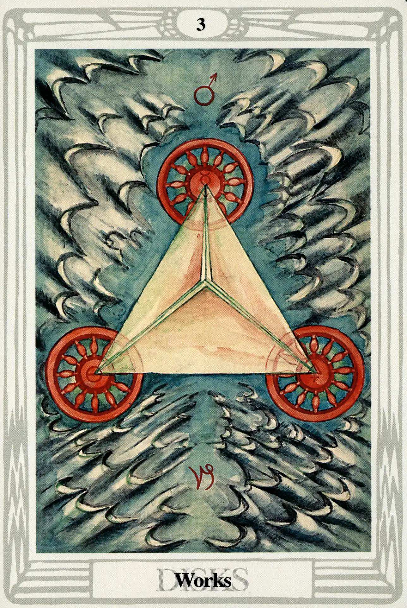

Disks
Three of Disks

(Mars in Capricorn)
10° to 20° Capricorn
December 31 to January 9
Original Title: Lord of Material Works.
Golden Dawn Model: From clouds at the bottom of the card, a hand appears holding a branch of a rose tree. Three disks are arranged as an upright equilateral triangle. Crowning the top disk are two white rosebuds. The two lower disks appear right and left at the tips of green leaves.
Princess Scale for Binah: Grey, flecked Pink.
The Four Scales for Mars: Scarlet; Red; Venetian Red; Bright Red, rayed Azure or Emerald.
The Four Scales for Capricorn: Indigo; Black; Blue-black; Cold Dark Grey, nearing Black.
Formula: 3 (Binah) of Disks (Assiah) + Mars in Capricorn = WORK Although in The Book of Thoth Crowley consistently refers to this card as Work, the title that appears on Lady Harris's painting (and consequently the published editions of the Thoth Tarot) is Works. In either case, the factors that determine its character (Binah of Assiah, Mars in Capricorn) make this card, among all the abstract supernal triad small cards, the most un-abstract. In a very real way, the Three of Disks is the material heart of the three-stroke engine that drives the universe that we discussed in Atu X. Crowley says it is “the material establishment of the idea of the Universe, the determination of its basic form.”
The image is an aerial view of a pyramid or tetrahedron firmly fixed on a desolate desert representing the great sea of Binah. The gray sand dunes seem to have been formed by blasts of energy emanating from the structure, which itself is supported by three great wheels. Although they are very small and difficult to see, the symbols of the alchemical elements mercury, sulfur, and salt appear in the hubs of the three wheels, suggesting the eternal universe-sustaining competition of the three gunas of the Hindu system.